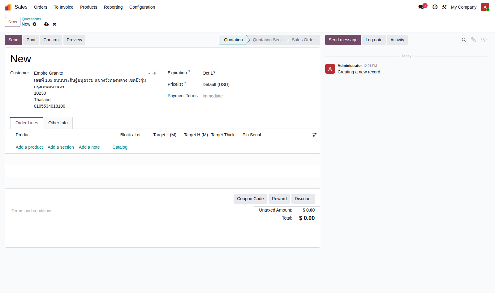
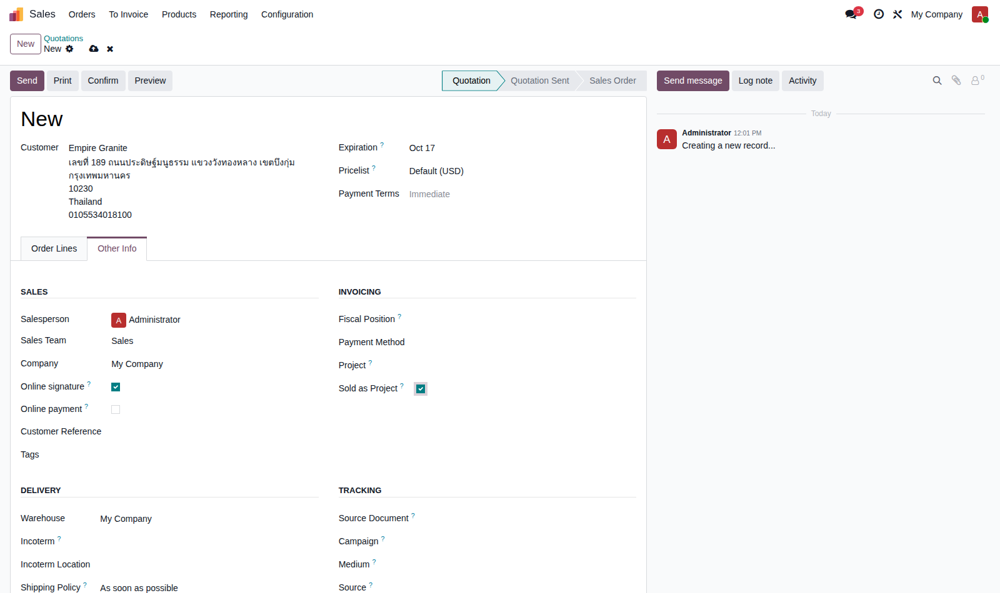
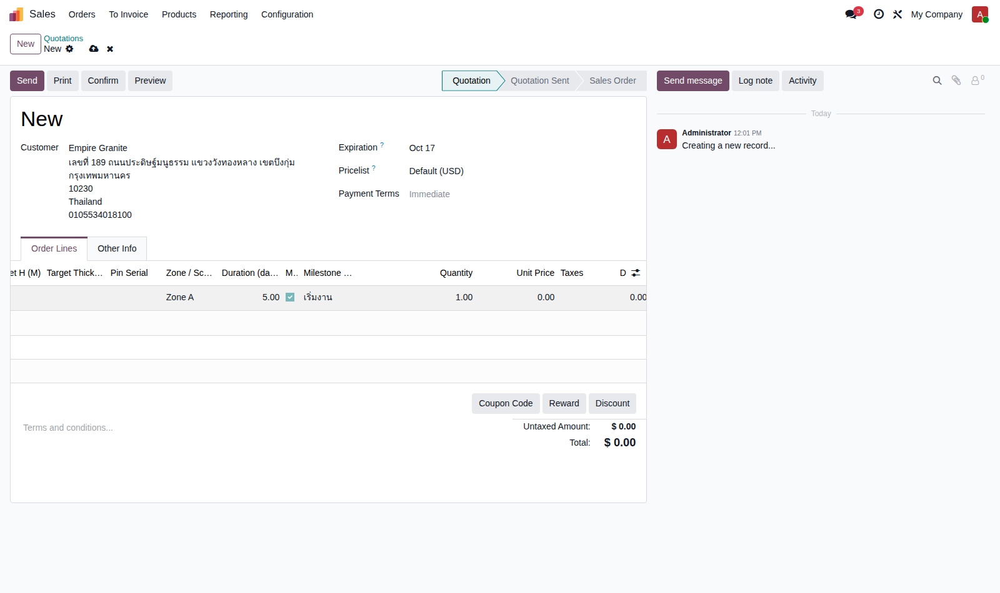
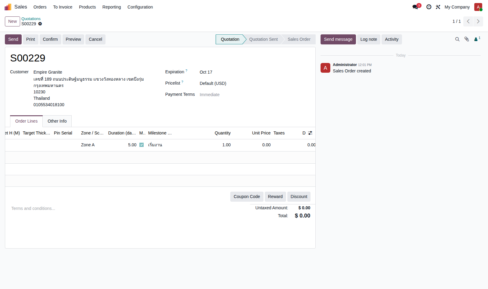
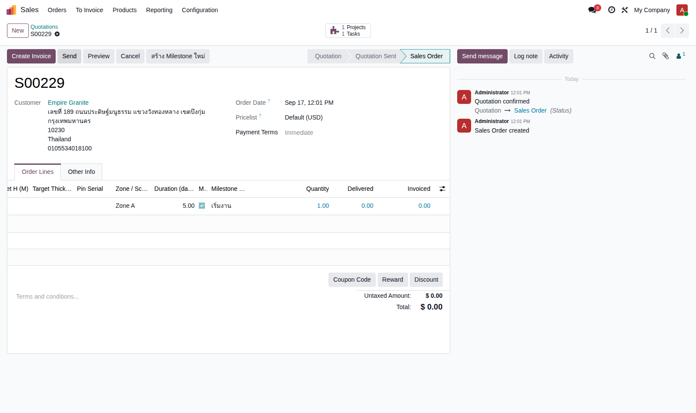
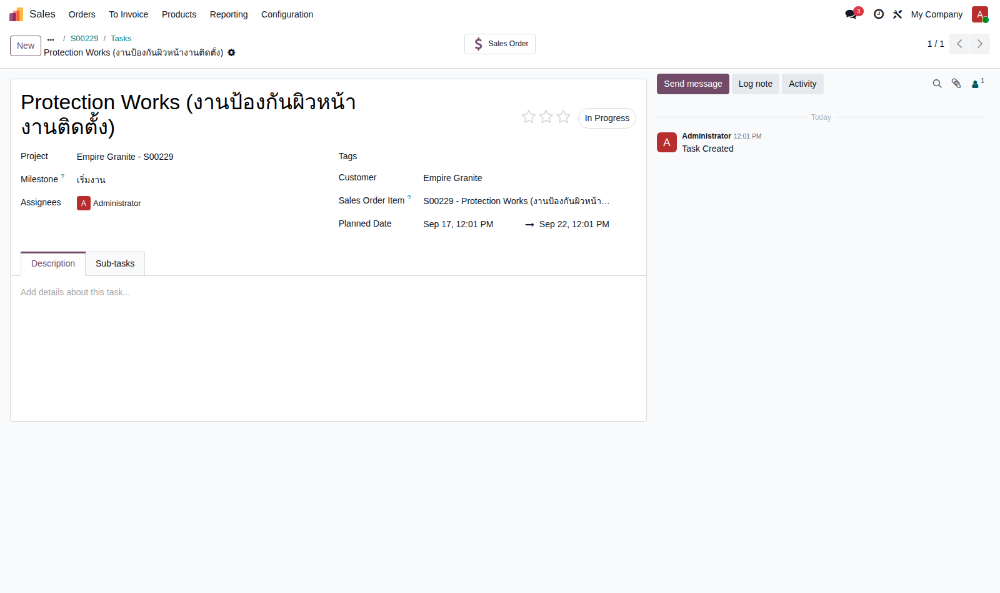

Empire Stone × Empire Granite — QA · แนวคิด EG-321
Golden Path — สวิตช์ Project
อัปเดตล่าสุด: 17 ก.ย. 2026
เดิมเรียก "Mode 4 (Sold-as-Project)" — ตามแนวคิด EG-321 ไม่ใช่จุดขายที่ 4 แต่เป็น สวิตช์ ที่แปะกับใบสั่งขายจุดขายไหนก็ได้ (Block/Slab/FG) เพื่อเปิดการติดตามงานเป็น Task + เก็บเงินเป็นงวดผ่าน Milestone (ADR-021, ปรับกลไก Milestone ใหม่ ADR-069 2026-09-17) เรื่องราวนี้สาธิตด้วยสินค้าบริการ "Protection Works" แต่สวิตช์นี้ใช้ได้กับสินค้าจริงประเภทไหนก็ได้ — ไม่ต้องมี BOQ ก็เปิดใช้ได้ (แยกอิสระจากสวิตช์ BOQ อย่างสมบูรณ์)
6Test Case ทั้งหมด
4High Priority
2Medium Priority
ทราบแล้ว ยังไม่ทำ: เอกสารนี้ยังไม่มีปุ่ม Export Excel (ต่างจาก Golden Path มาตรฐานชุดอื่นที่มีไฟล์ .xlsx คู่กัน) และยังไม่ครอบคลุมการเก็บเงินเป็นงวด (Down Payment invoice) กับการปิด Milestone จนถึงบัญชี — ทำเวอร์ชันย่อไว้ก่อนประชุมทีม 17 ก.ย. จะขยายเพิ่มรอบหน้า
เปิดสวิตช์ Project บนใบเสนอราคา
ไม่ต้องมี BOQ — ใช้ได้กับใบเสนอราคาธรรมดา
| TC ID | Scenario | Precondition | Steps | ข้อมูลตัวอย่าง | Expected Result | Priority | หน้าจอจริง |
|---|---|---|---|---|---|---|---|
| TC-SW-PROJ-01 | สร้างใบเสนอราคาใหม่ ระบุลูกค้า | มีลูกค้าอยู่แล้วในระบบ |
|
ลูกค้า = Empire Granite | ฟอร์มใบเสนอราคาใหม่เปิดขึ้น พร้อมข้อมูลลูกค้า | High |  |
| TC-SW-PROJ-02 | เพิ่มบรรทัดสินค้า/บริการ แล้วติ๊ก "Sold as Project" ที่แท็บ Other Info ติ๊กได้โดยไม่สนใจว่าใบเสนอราคานี้มี BOQ หรือเปล่า — เป็นสวิตช์อิสระ |
ทำ TC-SW-PROJ-01 เสร็จแล้ว |
|
สินค้า = Protection Works (งานป้องกันผิวหน้างานติดตั้ง) | Checkbox "Sold as Project" ติ๊กได้ทันที ไม่มีเงื่อนไขบังคับให้ต้องมี BOQ ก่อน | High |  |
| TC-SW-PROJ-03 | กรอก Zone / Duration / Milestone บนบรรทัดโดยตรง ฟิลด์เหล่านี้ (ADR-069, 2026-09-17) ย้ายมาอยู่บนบรรทัดใบสั่งขายแล้ว ไม่ได้ผูกกับ BOQ อีกต่อไป |
ทำ TC-SW-PROJ-02 เสร็จแล้ว |
|
Zone = "Zone A" Duration = 5 วัน Milestone = "เริ่มงาน" |
กรอกได้ตรงบนบรรทัดในตาราง Order Lines ทันที ไม่ต้องเปิด BOQ Document ใดๆ | High |  |
| TC-SW-PROJ-04 | บันทึกใบเสนอราคา | ทำ TC-SW-PROJ-03 เสร็จแล้ว |
|
- | บันทึกสำเร็จ ได้เลขที่ใบเสนอราคา (ตัวอย่างจริง: S00229) ข้อมูล Zone/Duration/Milestone ที่กรอกไว้ยังอยู่ครบ | Medium |  |
| TC-SW-PROJ-05 | ยืนยันคำสั่งขาย | ทำ TC-SW-PROJ-04 เสร็จแล้ว |
|
- | คำสั่งขายยืนยันสำเร็จ (state = Sales Order) ระบบสร้าง Project ให้อัตโนมัติเบื้องหลัง | High |  |
| TC-SW-PROJ-06 | เปิด Project ที่สร้างขึ้น ตรวจ Task + Milestone ชื่อ Task = ชื่อสินค้าบนบรรทัด, Milestone ที่ตั้งชื่อไว้ผูกอยู่บน Task โดยตรง, วันวางแผนคำนวณจาก Duration ที่กรอก (5 วัน = 17→22 ก.ย.) |
ทำ TC-SW-PROJ-05 เสร็จแล้ว |
|
- | Project ชื่อ "Empire Granite - S00229" มี 1 Task "Protection Works" ผูก Milestone "เริ่มงาน" วันวางแผน 17–22 ก.ย. (5 วัน) และเชื่อมกลับไปที่ Sales Order Item เดิม | High |  |